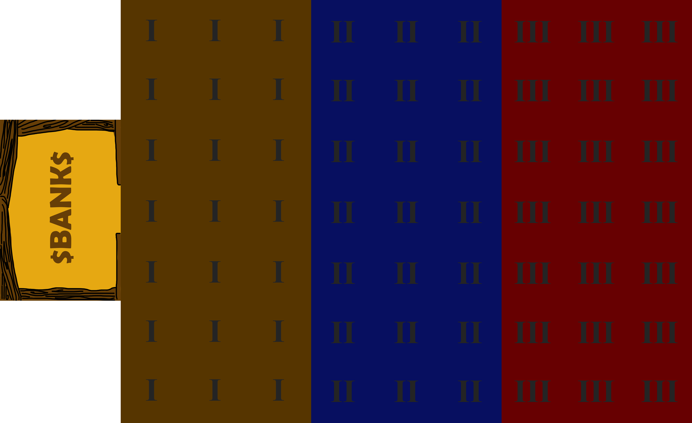
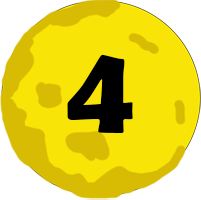
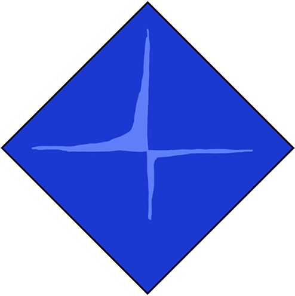
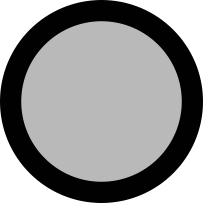
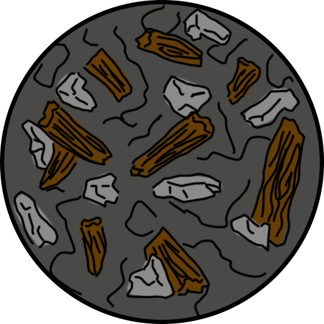
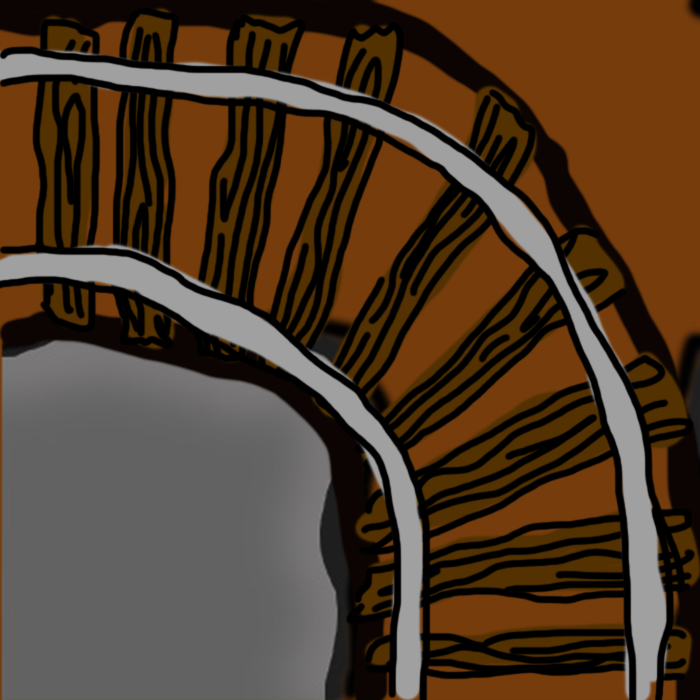
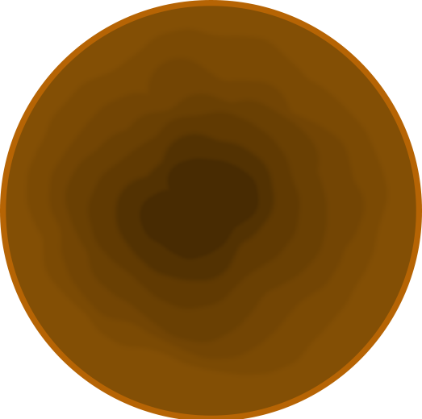
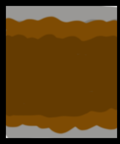

Rules to Diggy Diggy Gold
Objective
The objective of the game is to aquire more gold than your opponents by digging tunnels, finding gold and carrying it to the Bank
Setup
Roll off at the beggining of the game to determine the order in which players get to choose which one of the four characters they are going to play as. Keep the same order to take turns during the game.
There are four different roles: Dynamite, Pickaxe, Minecart or Drill . The play style is different for each role. Read the „Turn“ chapter for detailed explanations of how each role is played. Each role can only be played by one player.
Place the Bank tile on the table, make sure you have enough room for a 9x7 grid of tiles on the table. (Optional)Find an empty tile with four openings from the I layer pile and place it adjacent to the Bank‘s entrance.
The grid is 7 tiles wide and 9 tiles tall with entrance to the Bank going down the middle of the 7. The first three rows from the Bank are tiles from Layer I pile (the tiles that have the roman I written on the back of it). Next three rows are for the tiles from the Layer II pile. The last three rows are for the tiles from Layer III pile. The tiles have to be placed face down (roman numerals facing up).

Turn
Each turn consists of three actions. Each action can be either digging, walking or a special ability and can be performed in any order. Walk action and Dig action, can be used multiple times in one turn, special ability however. can be performed only once per turn. You can end your turn after having completed just one action if you find it advantagious.
Digging
Digging is performed by standing next to a tile which requires diggining. Dig action does not change the position of the miner.
Placing tiles
After uncovering a new tile, the player who did the digging may rotate the tile however they want as long as the path connects to the tile they‘re standing on. Once the player moves on to the next action or next players turn, the position of the tile becomes final and cannot be changed thereafter.
Gold
Tiles containing gold are marked by Gold symbol  and a numer 1-4 signifying the amount of gold on that tile. When a tile containing gold has a Dig action performed on it, any gold on that tile, goes to the player that did the digging. If the miners pockets are full, the surplus gold stays on the tile it originated on. i.e. if a dynamite wielding miner is caryying 1 gold in their pocket uncovers a tile with 3 gold on it, 1 gold token is placed in the free pocket slot on that players player matt, the remaining two gold tokens are placed on the tile it originated on.
Hard rock
If a tile is marked with a Hard rock symbol , then a hard rock token has to be placed on that tile along with the amount of gold tokens specified on that tile. As long as the hard rock token is still on the tile it is inaccessible and requires another Dig action to be accesible. The gold on this tile acts the same way as the regular tile after the hard rock marker is removed.
Void
If an uncoverd tile is marked with a Void symbol , then additional tiles may be uncovered for free, depending on your role. See under Roles section for specifics.
Walking
Walking distance for each walking action is determined by a dice roll. The number of dice and the specifics of walking is different for each role. See under Roles section for the specifics. Walking action is interupted by other actions i.e. if you roll 6 but only need to walk 3 steps untill you reach a dig site, then the remaining steps do not carry over to after the dig action. Dropping off your gold in the Bank does not interupt your walking action. Treat the Bank as a protruding tile.
Special Ability
Each special ability can be performed only once per turn. Each role has a unique ability. See under Roles section for specifics.
Roles
Pickaxe
Walking
The Pickaxe rolls 4 six sided dice to determine how many tiles they can move.
Digging
One dig action can affect one adjacent tile at a time. If during a dig action miner with pickaxe uncovers a tile marked with a Void symbol , they get to immidiately perform another dig action for free as long as it is not interupted by a different action.
Special ability: Deep dig
While on a tile with a gold symbol and no permanent token on it, the Pickaxe can place a Deep dig token and roll 1 die. If the roll is succseful, then 1 gold is produced on that tile. The Deep dig is succesfull on a roll of 4-6 while in Layer I, 3-6 on Layer II and 2-6 on Layer III. This action cannot be repeated on the same tile.
Carrying capacity
The Pickaxe can carry up to 1 gold at a time.
Dynamite
Walking
The Dynamite rolls 2 six sided dice to determine how many tiles they can move.
Digging
One dig action affects every adjacent tile. if during a dig action, the Dynamite uncovers a tile maked with a Void symbol , another tile can be affected as long as it is in a straight line from the Dynamite. The additional tile has to be along the path that had the Void in it. Any gold that can be collected on the aditional tile, goes to the Dynamite.
Special ability: Collapse
The Dynamite can collapse any unoccupied adjacent tile by placing the collapse token on it. The Collapse token can go even on tiles with permanent tokens. The Collapsed token works the same as the Hard rock token..
Carrying capacity
The Dynamite can carry up to 2 gold at a time.
Minecart
Walking
The Minecart rolls 1 six sided die subtracts the number of gold in their pocket (to the minimum of 1) to determine how many moves in a straight line they can make. Any number of tiles that make up a straight path counts as one step. The Minecart has to stop to pick up gold off of the ground, but that does not interupt your walking action.
Digging
One dig action can affect one adjacent tile at a time. If during a dig action miner with pickaxe uncovers a tile marked with a Void symbol , they get to immidiately perform another dig action for free as long as it is not interupted by a different action.
Special ability: Corner rail
While on a tile that with no permanent token on it, the Minecart can place a Corner rail token facing the direction of choise, thus turning one change in direction into a “straight“ line. The mine cart player no longer has to stop on that one corner. This only works for the one corner displayed on the token. The Minecart can still move through that tile regularly in other directions.
Carrying capacity
The Minecart can carry up to 3 gold at a time.
Drill
Walking
The Drill rolls 2 six sided dice to determine how many tiles they can move. ### Digging
One dig action can affect one adjacent tile at a time. If during a dig action miner with pickaxe uncovers a tile marked with a Void symbol , they get to immidiately perform another dig action for free as long as it is not interupted by a different action.
Special ability: Hole in the wall
While on a tile with no permanent token on it, the Drill can place a Hole-in-a-wall token. This token allows the Drill to move through a single wall. The player can dig through this hole. See Placing tiles section.
Carrying capacity
Miner with a pickaxe can carry up to 2 gold at a time.
Endgame
Once any tile from layer 9 is uncovered, every miner gets one turn to bring the contents of their pockets to the Bank. Whatever gold is left in their pockets and not in the Bank is not counted towards the final score.
The game may end if the tiles are layed down in such a way that it is no longer possible to mine further and everyone delivers the contents of their pockets to the Bank.
Glossary
| Location | Description | Image |
|---|---|---|
| Bank | the starting place where every player has to deliver their gold. | |
| Collapse | Dynamite‘s special ability. A removable token. Meant to temporarily block off a tile. |  |
| Corner Rail | Minecart‘s special ability. A permanent token. Meant to eliminate one change in dirrection |  |
| Deep dig | Pickaxe‘s Special ability. A Permanent token. Meant to find more gold |  |
| Hard rock | A Map feature. The contents of a tile is revealed without giving access to it | |
| Hole-in-a-wall | Drill‘s speacial ability. Meant to create exclusive access to an area or create a short cut. |  |
| Permanent token | Tokens that cannot be removed by a digging action.the croner rail, the deep dig and the hole-in-a-wall | |
| Pockets | Slots that each player character .has to carry gold in | |
| Void | A Map feature. May provide additional Dig action. |
For Rule-lawyering
Two Hole-in-a-wall tokens are required in order to penetrate a double wall.
In this situation a single dig action by a dynamite would remove the hard rock token, the Collapse token and uncover the new tile. it would retrieve all the gold simoultaneously. Dynamite can place the Collapse token through the Hole-on-a-wall token as if it was any regular adjacent tile.
If a Deep dig is performed successfuly while having full pockets, the new gold is left laying on the ground.
If a Drill/Minecart/Pickaxe uncovers a tile with a Void symbol , they may immediately perform another dig action on another adjacent tile as a free action. This free action does not carry over to another action. If there is nothing to dig where the player is standing, then it goes to waste.
If Dynamite uncovers a tile with the Void symbol , and orients it a way that creates a straight path, then anothe tile is uncovered across from the player. The player may chose not to orient the void tile in such a way.
If Dynamite uncovers more gold than they can fit in their pockets, then the player may chose which gold they want to take. If Minecart encounters gold in its path, then it has to stop in order to pick it up as if it was another change in direction. The player may choose to move past it without stopping and picking the gold up.
Everyone can dig through a hole in the wall.
Dynamite can place the Collapse token on top of the Hard rock token. Gaining access to that tile would then require dig actions. Outer pipes Cell padding
| Ruling | Image |
|---|---|
| Two Hole-in-a-wall tokens are required in order to penetrate a double wall. |  |
| In this situation a single dig action by a dynamite would remove the hard rock token, the Collapse token and uncover the new tile. it would retrieve all the gold simoultaneously. |  |
| Dynamite can place the Collapse token through the Hole-on-a-wall token as if it was any regular adjacent tile. |  |
| If a Deep dig is performed successfuly while having full pockets, the new gold is left laying on the ground. |  |
| If a Drill/Minecart/Pickaxe uncovers a tile with a **Void** symbol , they may immediately perform another dig action on another adjacent tile as a free action. This free action does not carry over to another action. If there is nothing to dig where the player is standing, then it goes to waste. |  |
| If Dynamite uncovers a tile with the **Void** symbol , and orients it a way that creates a straight path, then anothe tile is uncovered across from the player. The player may chose not to orient the void tile in such a way. |  |
| If Dynamite uncovers more gold than they can fit in their pockets, then the player may chose which gold they want to take. |  |
| If Minecart encounters gold in its path, then it has to stop in order to pick it up as if it was another change in direction. The player may choose to move past it without stopping and picking the gold up. |  |
| Everyone can dig through a hole in the wall. |  |
| Dynamite can place the Collapse token on top of the Hard rock token. Gaining access to that tile would then require dig actions. |  |